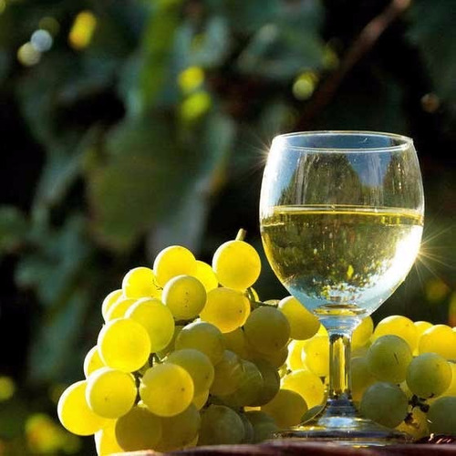

Salta
Pocos lugares en el mundo sorprenden como esta Ruta del Vino.
La variedad de colores en sus
montañas, los
pueblos típicos y la calidez de su gente transforman a este lugar en algo mágico. Atraviesa lugares
con
paisajes muy llamativos como los de la Quebrada de las Flechas, Quebrada de las Conchas y pueblos
centenarios como Molinos, San Carlos, Seclantás y Cachi con una enorme riqueza cultural que se
expresa
en la
música y las artesanías.
A través de la Ruta Nacional N°68 y la famosa Ruta Nacional N°40
se
puede
degustar los vinos más altos del mundo y probar las diferentes variedades que ofrecen las bodegas
salteñas.
Es la ruta del vino más alta del mundo, se encuentra en los Valles Calchaquíes y es el área de
producción de
vinos más importante de Salta.
Presenta un clima seco y templado, óptimo para el cultivo y
producción
del
Torrontés y otras cepas como el Cabernet Sauvignon, Malbec, Tannat, Bonarda, Syrah, Barbera y
Tempranillo.
Las características geográficas y el clima le conceden al vino de la zona un gran carácter,
fuerte personalidad y alta calidad con fragancias, coloridos y sabores únicos, siendo por esto
reconocidos y
premiados a nivel mundial.
A través de esta ruta y todas sus bodegas puede conocerse,
apreciarse y
degustarse todas las cualidades del vino de altura.
En la actualidad se exportan desde la
provincia de Salta 1.200.000 botellas de vinos premium a 30 países de todo el mundo, por lo que
actualmente Salta
es uno de los destinos preferidos de la Argentina en enoturismo.
Modernas bodegas equipadas
con nueva
tecnología han incorporado nuevos servicios para los turistas, que varían desde las tradicionales
visitas guiadas por las plantas de producción y los viñedos hasta alojamiento en estancias con un
muy alto nivel
de servicios.
Se destaca también en esta ruta el Museo de la Vid y el Vino en Cafayate y la
presencia de
Bodegas de Vinos Artesanales que le otorgan un plus al sabor del Valle.
El Torrontés
Este vino es la conjunción perfecta entre la inspiración y la obra del hombre, el suelo y el clima de
su lugar de origen.
Los valles cuentan con terruños muy especiales que, gracias a sus
excelentes condiciones
(altura, suelo, humedad, amplitud térmica, etc.) aportan atributos típicos y diferenciales.
Esta combinación
de factores es ideal para el desarrollo de la cepa torrontés de sabor dulce, profundo y frutado, que
ha sabido
ganar innumerables medallas de oro y plata en certámenes internacionales.
Características del torrontés
- Olfato: Los aromas característicos del Torrontés recuerdan a rosas, duraznos blancos y siempre se encuentran presente el aroma a la uva torrontés.
- Sabores: A la boca el Torrontés tiene presente los sabores a cáscara de naranja, duraznos blancos, ensalada de frutas, hacen que el mismo aparezca como un vino dulce pero en realidad es un magnífico vino seco.
- Comidas: El Torrontés es ideal para acompañar entradas, mariscos, sushi, cocina fusión, platos thai picantes, empanadas salteñas, locro norteño, como aperitivo.
Salta, la linda, vinos de altura de los Valles Calchaquíes.
Mapa de la Ruta del Vino en Salta
Sitio de interés: http://turismosalta.gov.ar/